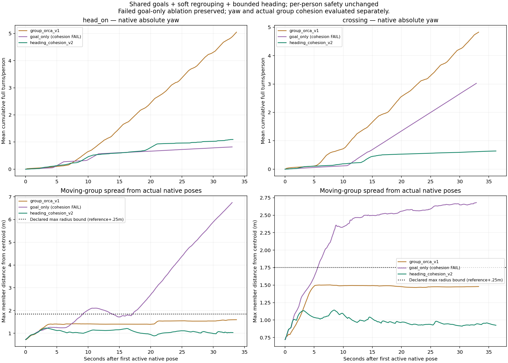
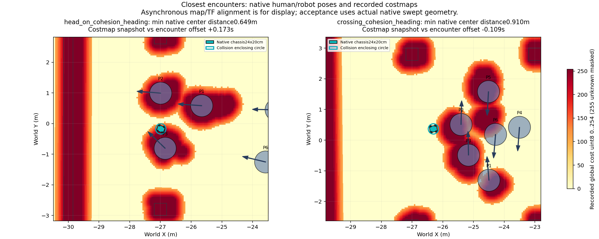

Nhóm đi bộ: giảm quay, giữ gắn kết và tránh robot
Thử nghiệm SocNavGym tùy chỉnh, robot/Nav2/Gazebo hiện có. Giữ đồng hồ mô phỏng, không đổi mặc định ROS hoặc dataset cũ.
Những thay đổi đã thử
Bỏ lớp tránh nhau bằng vòng bao cứng của cả nhóm, vẫn giữ ORCA và kiểm tra va chạm từng người. Bản chỉ bỏ vòng bao đã giảm quay nhưng làm nhóm tách xa; kết quả thất bại đó được giữ nguyên.
Bản mới thêm kéo nhẹ về tâm nhóm khi bị giãn, giảm tốc người đi trước để chờ, và giới hạn cách đổi hướng: góc lệch lớn thì quay trước rồi mới đi tới. Các điều chỉnh là đề xuất trước lớp tránh va chạm, không dịch chuyển hoặc sửa yaw sau lớp kiểm tra.
Đang tổng hợp kết quả native.
Kết quả từ pose thật trong Gazebo
Giữ nguyên ngưỡng đã công bố trước thử: tốc độ quay giảm ít nhất50%; bán kính xa nhất từ tâm tới thành viên không vượt tham chiếu quá25cm; không tăng tỷ lệ đi ngược hướng quá5 điểm phần trăm. Điều hướng, khoảng hở và tiếp cận gần được xét riêng.

Hai video mô phỏng ghi thật
Tốc độ:
RGB observer Gazebo1Hz, mã hóa từ GIF gốc và giữ các đoạn đứng hình. Không dùng AI sinh ảnh; đây không phải video tái dựng skeleton.Footprint và costmap

Costmap và TF lấy gần thời điểm gặp gần nhất, độ lệch được ghi trên hình; chỉ dùng minh họa. Khoảng hở được kiểm tra riêng bằng pose world thực tế.Lỗi đóng phiên phải xử lý trước thu dữ liệu
Lượt cắt ngang có bridge ground_truth abort (-6) khi ROS launch gửi SIGINT sau khi đã ghi xong goal và label tail. Audit đầy đủ vẫn FAIL; không xóa lỗi, nới policy hoặc chạy lại để thay thế bản ghi này.
Chi tiết lỗi và phạm vi kiểm tra đã đạt